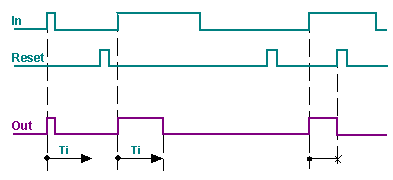
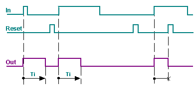
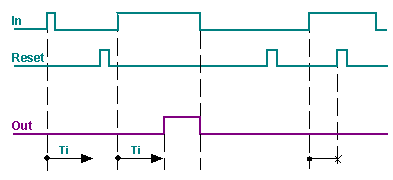
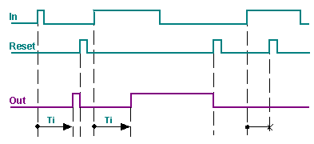
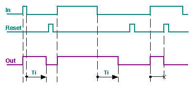

TMR_FNCT：脉冲和延迟
TMR_FNCT (FB400) 块处理脉冲信号。
- Limit, harmonize, or extend pulse length.
- Delay switch-on or switch-off.
- Save switch-on.
该功能块用于：
- Time delays and pulses (with the aid of an input signal). The cycle generator CYCLEGEN (FB401) block can be used for pulses without start condition.
- Switch-on and switch-off delays, minimum runtimes, minimum breaks for an aggregate (by combining several TMR_FNCTs).
功能性
根据设置的定时器模式 [TiMod]，以下功能之一被激活。
TiMod | Process |
... |
|
Pulse | 极限脉冲长度  输入 [In] 处的脉冲被缩短至最大可能脉冲长度 [Ti]。 脉冲 [Reset] 将输出立即重置为 [Out] = 0（关闭）。 |
ExpPulse | 恒定脉冲长度  输入 [In] 处的脉冲被延长或缩短至恒定脉冲长度 [Ti]。 脉冲 [Reset] 将输出立即重置为 [Out] = 0（关闭）。 |
SWOnDly | 开启延迟  输入 [In] 处的脉冲仅在延迟时间 [Ti] 后切换至输出 [Out]。短于[Ti]的脉冲无效。 脉冲 [Reset] 将输出立即重置为 [Out] = 0（关闭）。 |
StoSWOn | 有效的偏离点。  在延迟时间 [Ti] 后，输入 [In] 处的脉冲将输出 [Out] 持续切换为“打开”。脉冲 [Reset] 将输出重置为 [Out] = 0（关闭）。 |
SWOffDly | 脉冲扩展  输入 [In] 处的脉冲会延长延迟时间 [Ti]。 脉冲 [Reset] 将输出立即重置为 [Out] = 0（关闭）。 |
Reset
[重置] 后，所有启动时间都会重置，并且输出 [Out] 也会重置。
如果[Reset]和[In]同时出现，则重置优先。如果在计时器运行期间再次出现启动条件，则计时重新开始。
输入
Pin | E | Description | |
In | pa | 输入。 | |
Ti | pa | 时间。 延迟时间或脉冲长度。 对运行时的更改立即生效。 | |
0ms | 无延迟时间或脉冲长度。 | ||
... | 延迟时间或脉冲长度。 | ||
TiMod | p | 定时器模式。 更改定时器模式后，会在执行该块的功能之前执行内部复位。 | |
1（脉冲） | 脉冲 限制脉冲长度。 | ||
2（扩展脉冲） | 恒定的脉冲长度。 协调脉冲长度（恒定长度）。 | ||
3（开启延迟） | 开启延迟。 延迟开启并缩短脉冲长度。 | ||
4（存储开关打开） | 开启延迟并节省财产。 仅通过[重置]延迟开启和关闭。 | ||
5（关闭延迟） | 脉冲延伸。 延长脉冲长度。 | ||
Reset | p | 重置。 | |
ResetTi | p | 重置次数 | |
输出
Pin | E | Description |
Out | a | 输出。 |
TiEld | a | 已过去的时间。 截止日期尚未确定。达到Ti后，TiEld重置为零。 |
输入值
Pin | Description | Data type | Default value | E.g. Engineering unit or Text group | Min. | Max. |
In | 输入。 | 布尔值 | 0（否） | 不，是 |
|
|
Ti | 时间。 | 时间 | 1m_40s | T#0d_0h_0m_0s_0ms |
|
|
TiMod | 定时器模式。 | 多态 | 2（扩展脉冲） | 定时器模式 | 脉冲 | 脉冲扩展 |
Reset | 重置。 | 布尔值 | 0（否） | 不，是 |
|
|
ResetTi | 重置次数 | 布尔值 | 0（否） | 不，是 |
|
|
输出值
Pin | Description | Data type | Default value | E.g. Engineering unit or Text group | Min. | Max. |
Out | 输出。 | 布尔值 | 0（关） | 关、开 |
|
|
TiEld | 已过去的时间。 | 时间 | 0ms | T#0d_0h_0m_0s_0ms |
|
|
应用
各个操作模式的应用示例：
Operating mode pulse:
通过确保阻尼器在启动后指定时间内到达终端位置来监控阻尼器功能。
Operating mode extended pulse:
楼梯间自动化通过按钮在特定时间打开灯。
Operating mode for switch-on delay:
存在探测器仅在进入房间后的特定时间后打开通风。
Operating mode for switch-off delay:
浴室排气装置仅在灯关闭后指定时间后关闭。
过程响应
标准（参见General rules and information).
故障排除
标准（参见General rules and information).